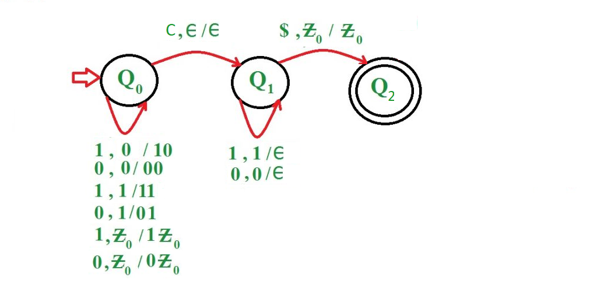
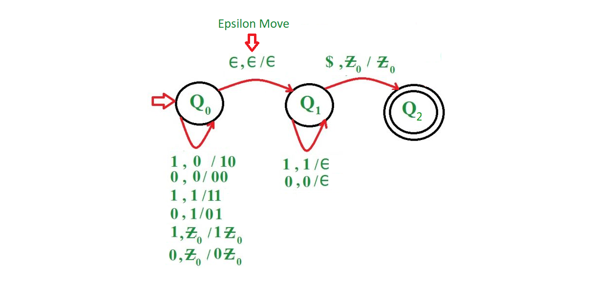
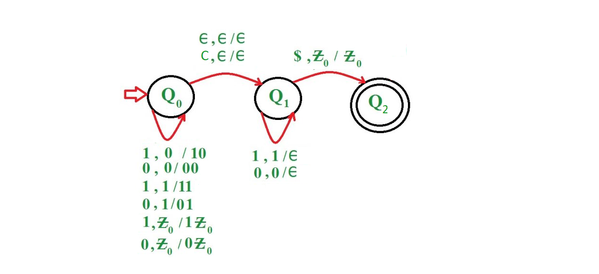

A Pushdown Automaton (PDA) is like an epsilon Non deterministic Finite Automata (NFA) with infinite stack. PDA is a way to implement context free languages. Hence, it is important to learn, how to draw PDA.
Here, take the example of odd length palindrome:
Que-1: Construct a PDA for language L = {wcw’ | w={0, 1}*} where w’ is the reverse of w.
Approach used in this PDA –
Keep on pushing 0’s and 1’s no matter whatever is on the top of stack until reach the middle element. When middle element ‘c’ is scanned then process it without making any changes in stack. Now if scanned symbol is ‘1’ and top of stack also contain ‘1’ then pop the element from top of stack or if scanned symbol is ‘0’ and top of stack also contain ‘0’ then pop the element from top of stack. If string becomes empty or scanned symbol is ‘$’ and stack becomes empty, then reach to final state else move to dead state.
- Step 1: On receiving 0 or 1, keep on pushing it on top of stack without going to next state.
- Step 2: On receiving an element ‘c’, move to next state without making any change in stack.
- Step 3: On receiving an element, check if symbol scanned is ‘1’ and top of stack also contain ‘1’ or if symbol scanned is ‘0’ and top of stack also contain ‘0’ then pop the element from top of stack else move to dead state. Keep on repeating step 3 until string becomes empty.
- Step 4: Check if symbol scanned is ‘$’ and stack does not contain any element then move to final state else move to dead state.

Examples:
Input : 1 0 1 0 1 0 1 0 1 Output :ACCEPTED Input : 1 0 1 0 1 1 1 1 0 Output :NOT ACCEPTED
Now, take the example of even length palindrome:
Que-2: Construct a PDA for language L = {ww’ | w={0, 1}*} where w’ is the reverse of w.
Approach used in this PDA –
For construction of even length palindrome, user has to use Non Deterministic Pushdown Automata (NPDA). A NPDA is basically an NFA with a stack added to it.
The NPDA for this language is identical to the previous one except for epsilon transition. However, there is a significant difference, that this PDA must guess when to stop pushing symbols, jump to the final state and start matching off of the stack. Therefore this machine is decidedly non-deterministic.
Keep on pushing 0’s and 1’s no matter whatever is on the top of stack and at the same time keep a check on the input string, whether reach to the second half of input string or not. If reach to last element of first half of the input string then after processing the last element of first half of input string make an epsilon move and move to next state. Now if scanned symbol is ‘1’ and top of stack also contain ‘1’ then pop the element from top of stack or if scanned symbol is ‘0’ and top of stack also contain ‘0’ then pop the element from top of stack. If string becomes empty or scanned symbol is ‘$’ and stack becomes empty, then reach to final state else move to dead state.
- Step 1: On receiving 0 or 1, keep on pushing it on top of stack and at a same time keep on checking whether reach to second half of input string or not.
- Step 2: If reach to last element of first half of input string, then push that element on top of stack and then make an epsilon move to next state.
- Step 3: On receiving an element, check if symbol scanned is ‘1’ and top of stack also contain ‘1’ or if symbol scanned is ‘0’ and top of stack also contain ‘0’ then pop the element from top of stack else move to dead state. Keep on repeating step 3 until string becomes empty.
- Step 4: Check if symbol scanned is ‘$’ and stack does not contain any element then move to final state else move to dead state.

Examples:
Input : 1 0 0 1 1 1 1 0 0 1 Output :ACCEPTED Input : 1 0 0 1 1 1 Output :NOT ACCEPTED
Now, take the example of all length palindrome, i.e. a PDA which can accept both odd length palindrome and even length palindrome:
Que-3: Construct a PDA for language L = {ww’ | wcw’, w={0, 1}*} where w’ is the reverse of w.
Approach used in this PDA –
For construction of all length palindrome, user has to use NPDA.
The approach is similar to above example, except now along with epsilon move now user has to show one more transition move of symbol ‘c’ i.e. if string is of odd length and if reach to middle element ‘c’ then just process it and move to next state without making any change in stack.
- Step 1: On receiving 0 or 1, keep on pushing it on top of stack and at a same time keep on checking, if input string is of even length then whether reach to second half of input string or not, however if the input string is of odd length then keep on checking whether reach to middle element or not.
- Step 2: If input string is of even length and reach to last element of first half of input string, then push that element on top of stack and then make an epsilon move to next state or if the input string is of odd length then on receiving an element ‘c’, move to next state without making any change in stack.
- Step 3: On receiving an element, check if symbol scanned is ‘1’ and top of stack also contain ‘1’ or if symbol scanned is ‘0’ and top of stack also contain ‘0’ then pop the element from top of stack else move to dead state. Keep on repeating step 3 until string becomes empty.
- Step 4: Check if symbol scanned is ‘$’ and stack does not contain any element then move to final state else move to dead state.

Examples:
Input : 1 1 0 0 1 1 1 1 0 0 1 1 Output :ACCEPTED Input : 1 0 1 0 1 0 1 Output :ACCEPTED